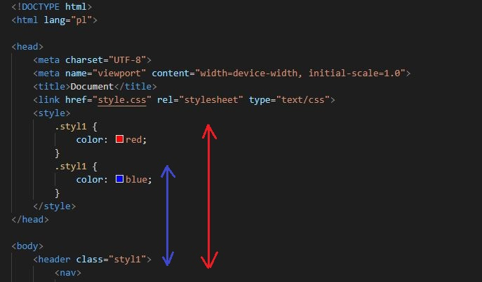

Stylowanie w oparciu o atrybuty element, id i klasa
Oprócz tego, że style można zamieścić w ramach znacznika style w sekcji "head" lub w pliku
zewnętrznym, mozna je też zastosować używając atrybutu "style" i przypisując go do konkretnego
znacznika, np. section, h1, p, etc. wg schematu:
znacznik style="color:yellow; background:#ffffff;" treść /znacznik
Styl przy znaczniku z wykorzystaniem atrybutu "style" nazywamy stylem inline, liniowym. Znajduje on
zastosowanie jedynie do tego konkretnego znacznika, przy którym atrybut ten został wpisany.
Aplikowanie stylów w ten sposób nie ma jednak większego sensu, bo robi się bałagan - kod staje się
nieczytelny i trudny do modyfikacji. I tutaj właśnie w grę wchodzą tzw. prawdziwe selektory -
wcześniej stylowaliśmy odnosząc się do elementów, natomiast najlepiej to robić w oparciu o
identyfikatory i klasy: #id i .class. Zwłaszcza klasy, które dodaje się do znaczników wg schematu:
znacznik class="name" treść /znacznik
Atrybut .class dodajemy w html przy danych tagach/znacznikach (pozwala na pogrupowanie elementów),
natomiast przekłada się on na stylowanie i cssy. Nazwę, którą nadajemy danej klasie, tworzymy wg
schematu kebab-case. Aby ostylować elementy, które mają przypisaną daną klasę, odnosimy się do nich
w pliku ze stylami w następujący sposób:
.name {
właściwość: wartość;
}
.(kropka) - to selektor klasy
Do stylowania elementów można wykorzystać również id, które wcześniej nadaliśmy tagom po to, by
wykorzystać je jako kotwicę służącą do przenoszenia sie w ramach dokumentu do konkretnej sekcji.
Identyfikator nadaje się elementom i wykorzystuje do stylowania wg następującego schematu:
znacznik id="name" treść /znacznik
#name {
właściwość: wartość;
}
# (hash) - to selektor id
Na danej stronie dokumentu może znajdować się tylko jedno id o danej konkretnej wartości, przypisane
do jednego konkretnego elementu.
Selektory można łączyć, czyli do danego znacznika może byc przypisane konkretne id i określona
klasa.
Jeśli chcemy ostylować wg określonego wzoru wszystkie linki, które znajdują się w obszarze nawigacji
"nav", tak by stylowanie odróżniało je od pozostałych linków występujących w treści dokumentu.
Elementy o znaczniku "a" są zatem zagnieżdżone w znaczniku "nav", chcemy więc ostylować elementy
znajdujące się w innym elemencie. Odnosimy się do nich w pliku z cssami wpisując po sobie elementy
"nav" i po spacji "a" wg wzoru:
nav a {
własność: wartość1;
}
a {
własność: wartość2;
}
Przy takim zapisie style nie zaaplikują się do samego znacznika "nav", ale do zawartych w nim
elementów "a", gdzie dana własnośc będzie miała wartość1. Natomiast pozostałe elementy "a", które
nie są zagnieżdżone w "nav" przyjmą wartość2 dla tej własności. Odnosząc się do elementów "a"
zawartych w "nav" nie musimy więc podawać dokładnej ścieżki body>header>nav, wystarczy podanie
bezpośredniego rodzica, czyli "nav". Nie musi to być również bezpośredni rodzic - w tym przypadku
ten sam efekt osiągniemy wpisując ścieżkę header>a.
!important i specyficzność w CSS
!important to zmora, jeśli chodzi o stylowanie. Nie powinno się tego używać, ponieważ !important
dopisany przy wartości dla danej własności opisującej określony element sprawia, że styl, przy
którym został on dodany nadpisuje wszystkie inne style, które zostały zdefiniowane dla danego
elementu. Opierając się na wcześniejszym przykładzie rozróżnienia stylów linków zagnieżdżonych w
znaczniku "nav" oraz linków znajdujących sie poza tym znacznikiem w treści dokumentu, dodanie
"!important" przy własności zdefiniowanej dla linków niezagnieżdżonych sprawia, że wszystkie linki,
zagnieżdżone i niezagnieżdżone, zostaną ostylowanie zgodnie z tym stylem. Przykład takiego zapisu:
nav a {
własność: wartość1;
}
a {
własność: wartość2 !important;
}
Wstawienie importanta w jakimś miejscu może więc sprawić, ze stylowanie całej strony się pozypie.
Zatem jeśli nie musimy i zastosowanie importanta nie jest naprawdę celowe w danym przypadku, to go
nie używajmy.
Co w sytuacji, gdy do danego elementu mamy zdefiniowane stylowanie zarówno w pliku css, jak i przy
danym znaczniku jako inline, tak jak na poniższym przykładzie?
W pliku CSS mamy zapis:
#name {
color: red;
}
Natomiast w kodzie html przy danym elemencie mamy wstawiony inline:
span id="name" style="color: yellow" treść /span
Dla treści elementu span o id=name mamy więc zdefiniowany w pliku css kolor czerwony, natomiast w
stylu liniowym kolor żółty. Przeglądarka zastosuje tutaj styl zdefiniowany w inline, czyli treść
będzie miała kolor żółty.
Jest to przykład występowania specyficzności w CSS, czyli zasad ważności sposobów zastosowania
stylów w sytuacji, gdy są one w konflikcie. Specificity to zatem zasada, która określa który
selektor ma pierwszeństwo w przypadku, kiedy wiele z nich ustawia te same reguły CSS dla tego samego
znacznika HTML. Kolejność ta została zwizualizowana na poniższym obrazku.

Zastosowanie ma zatem następująca kolejność wg pierwszeństwa obowiązywania reguł wprowadzonych przez
selektory: important, inline, id, klasa, element. Przy czym dwa pierwsze, important i inline, są
stosowane rzadko, dlatego zostały ujęte w nawiasie.
Przykładowo, jeśli mamy zdefiniowane dwie reguły css dla znacznika h1 w taki sposób jak poniżej,
czyli w jednej z nich jako selektor podajemy sam pojedynczy znacznik h1, natomiast w drugiej
uwzględniamy zagnieżdżenie tego znacznika h1 w elemencie body (jako selektor podajemy dwa elementy -
dziecko i rodzica), to w opierając się na zasadach specificity, zastosowanie będzie miała reguła CSS
zdefiniowana w oparciu o selektor z dwoma elementami (bo dwa elementy to więcej niż jeden element).
h1 {
color: red;
}
body h1 {
color: yellow;
}
Nagłówek będzie zatem żółty, ponieważ reguła CSS definiująca ten styl ma wyższą
specyficzność. Poniżej znajduje się obrazek przedstawiający wizualizację tego
przykładu.

To, która z reguł CSS będzie miała zastosowane jest również widoczne w devtools w przeglądarce -
styl, który został nadpisany jest przekreślony. Przekreślone są również zwykle domyślne style
przeglądarki, gdy są nadpisywane przez nas. W tym przypadku nie są przekreślone, bo taka własność
nie została zdefiniowana w przeglądarce (zadziałoby się tak np. w przypadku stylów zdefiniowanych dla
linków). Poniżej zrzut ekranu z devtools dla omawianego przypadku.
Devtools pozwala też na dodanie w zakładce elements do znacznika body atrybutu "contenteditable", poprzez
kliknięcie prawym przyciskiem i wybór opcji add atribute. Po dodaniu atrybutu można na żywo edytować stronę z
poziomu jej widoku, a nie narzędzi w devtools.
Kolejnym przykładem zastosowania reguł specyficzności css jest sytuacja, gdy do danego nagłówka
zostały użyte reguły css, z których jedna styluje go w oparciu o selektor składający się z trzech
elementów, natomiast druga używa selektora w postaci id.
html body h1 {
color: yellow;
}
#main-header {
color: red;
}
Wyższą specyficzność będzie miała tu reguła definiująca kolor czerwony. Mimo tego, że kolor żółty
opiera sie na selektorze składającym się z trzech elementów, a kolor czerwony określany jest dla
selektora składającego sie z jednego id, to id ma większą wagę i pierwszeństwo w zasadach
specyficzności. Wizualizację tego przykładu zawiera poniższy obrazek.
Na kolejnym przykładzie mamy sytuację, gdy jeden ze stylów zdefiniowany jest w oparciu o id i trzy
elementy, natomiast drugi w oparciu o id, klasę i jeden element. Wyższą specyficzność będzie miała
reguła CSS bazująca na id, klasie i jednym elemencie, ponieważ zawiera więcej selektorów o wyższej
wadze - id i klasa (2). Można to też przeczytać jako całe liczby i w ten sposób 111 > 103, a zatem
nagłówek będzie miał kolor czerwony. Poniżej zapis kodu i obrazek, który ilustruje ten przykład.
html body h1 #main-header {
color: yellow;
}
body .section #main-header {
color: red;
}
Jeśli specyficzność jest równa, to pierwszeństwo ma selektor znajdujący się "bliżej"
elementu.
Przykładowo w jednym pliku style.css mamy zdefiniowane dwie reguły składające się z tych samych
selektorów,
lecz każda z tych reguł styluje dany element w inny sposób. I jedna z reguł znajduje się pod drugą w
treści pliku, przy czym reguła definiująca kolor czerwony znajduje się wyżej niż reguła stylująca
kolor niebieski. Zastosowanie będzie miała tu reguła stylująca kolor niebieski, czyli ta, która jest
niżej, ponieważ znajduje się ona bliżej stylowanego elementu.
body section#main h1.heading {
color: red;
}
body section#main h1.heading {
color: blue;
}
Aby unaocznić sobie, na czym polega ta bliskość, wyobrażamy sobie, że style zdefiniowane w pliku
style.css są umieszczone w pliku HTML w miejscu, gdzie znajduje się odniesienie do pliku css. Na
przykładzie zobrazowanym poniżej element header ma przypisaną klasę "styl1", w oparciu o którą
został ostylowany w pliku css, gdzie dla tej samej reguły określono dwa różne style. Zastosowany
zostanie styl definiujący kolor niebieski, ponieważ jest umieszczony niżej, a tym samym fizycznie
znajduje się bliżej elementu header.

Analogicznie wygląda sytuacja, jeśli wpiszemy w pliku style.css dwa style w jeden selektor, np.:
body section#main h1.heading {
color: red;
color: blue;
}
Pierwszeństwo będzie miał ten, który jest niżej, czyli w tym przypadku niebieski.
Rekomendowane jest dodawanie klas do wszystkich elementów (nawet jeśli mamy tylko jeden
element danego typu) i unikanie zagnieżdżeń przy stylowaniu (np. selektorów składających się z
kilku elementów).
Można przyjąć następujące wytyczne dla tworzenia nazw klas:
1. Używamy pojedynczych angielskich słów rozpoczynających się od małej litery, a jeśli jest
konieczne użcie dwóch słów, to stosujemy kebab-case.
2. Nie zaczynamy od cyfry.
3. Nazywamy rzeczy zgodnie z ich funkcją na stronie.
4. Nie zwiększamy specyficzności bez potrzeby - staramy się, by element miał jedną klasę.